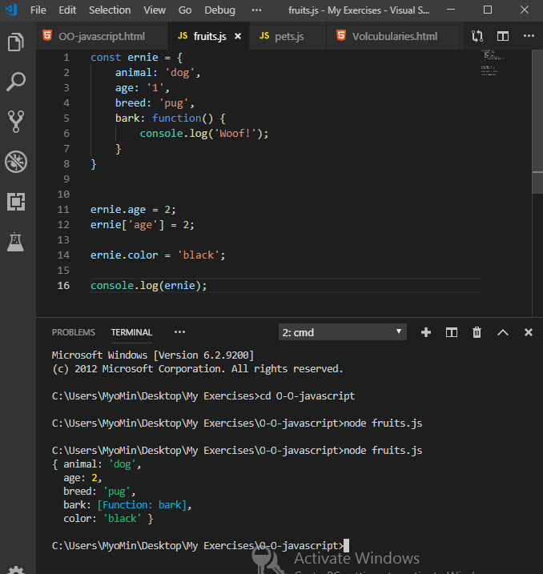

What You'll Learn
Welcome to Object-Oriented JavaScript
Object oriented JavaScript ဆိုတဲ့ content ကတော့ကျွန်တော်တို့ကိုtechnical skills တွေပိုပြီးတိုးတက်လာစေမယ့်အရာတစ်ခုသို့မဟုတ် bridge တစ်ခုပဲဖြစ်ပါတယ်။ဒါပေမယ့်ကျွန်တော်တို့က object oriented programming ရဲ့ထူးခြားချက်တွေအများကြီးကိုနားလည်ထားဖို့လည်းလိုအပ်ပါတယ်။JavaScript development ရဲ့ career အတွက်လည်းပိုပြီးပြင်ဆင်လာနိုင်တာဖြစ်ပါတယ်။ ကျွန်တော်တို့ရဲ့ contents တွေမှာ array, loops, object တွေနဲ့အလုပ်လုပ်တဲ့အခါမှာ foundational concepts တွေနဲ့ပိုပြီး familiar ဖြစ်ဖို့လိုအပ်ပါတယ်။ကျွန်တော်တို့လေ့လာရမှာကတော့ new terms တွေဖြစ်တဲ့ class, property နဲ့ method တွေပဲဖြစ်ပါတယ်။ပထမ ကျွန်တော်တို့က objects တွေနဲ့အလုပ်လုပ်ဖို့အတွက် ES 2015 syntax အသစ်ထဲမှာအ လုပ်မှာပဲဖြစ်ပါတယ်။
What Is an Object, and Why Do We Care
Object ဆိုတာကတော့ကျွန်တော်တို့ code တွေထဲမှာတစ်စုံတစ်ခုကိုအသုံးပြုချင်တယ်ဆိုရင်အဲ့တာတွေရဲ့ information ကို သေသပ်အောင်စနစ်တကျပြုလုပ်ပေးနိုင်တဲ့အရာတစ်ခုပဲဖြစ်ပါတယ်။object package ထဲမှာ properties groups တွေနဲ့ function တွေပါဝင်ပြီးတော့အဲ့တာတွေက program ထဲမှာတစ်ခုခုကိုကိုယ်စားပြုပြီးတော့အတူတကွအလုပ်လုပ်ပေးတာပဲဖြစ်ပါတယ်။object's properties တွေကအစုံလိုက်ရှိတဲ့ key values တွေရဲ့ series ဖြစ်ပြီး object ရဲ့ information တွေကိုချုပ်ကိုင်နိုင်တာပဲဖြစ်ပါတယ်။ပြီးတော့အဲ့ဒီ functions တွေကို methods လို့လည်းခေါ်ပါတယ်။methods ဆိုတာကတော့ object ကိုတစ်စုံတစ်ခုပြုလုပ်စေတာ သို့မဟုတ် အဲ့တာကိုပြီးမြောက်အောင်တစ်စုံတစ်ခုကိုပြုလုပ်စေတာပဲဖြစ်ပါတယ်။object oriented programming ဆိုတဲ့အသုံးအနှုန်းကတော့ စံအဖြစ်သတ်မှတ်ထားတဲ့ programming တွေကိုအမှန်တကယ်ဖော်ပြဖို့အတွက်ပဲဖြစ်ပါတယ်။developer တွေအများစုက real life objects model ဖြစ်ဖို့နည်းလမ်းတစ်ခုအဖြစ် code ထဲမှာရှိတဲ့ object တစ်ခုအဖြစ်တွေးထင်ဖို့ရန် ၎င်းကကူညီနိုင်သလားဆိုတာကိုရှာဖွေတာပဲဖြစ်ပါတယ်။Real life object တွေမှာ states တွေ behaviors တွေနဲ့ javaScript objects တွေပါဝင်တာပဲဖြစ်ပါတယ်။ javaScript states တေကို objects properties တွေကကိုယ်စားပြုပြီးတော့ behaviours တွေကိုတော့ objects methods တွေကကိုယ်စားပြုပါတယ်။ဥပမာကျွန်တော်တို့မှာအိမ်ဆိုတဲ့ code တစ်ခုရှိတယ်ဆိုပါဆို့။အဲ့ဒီအိမ်ကြီးက house object တစ်ခုဖြစ်ပါတယ်။အဲ့ဒီမှာ properties တွေပါဝင်ပါတယ်။square footage , color, year built ဆိုတာတွေပါဝင်မှာပဲဖြစ်ပါတယ်။နောက်ထပ်ကျွန်တော်တို့က radio object တစ်ခုကိုပြုလုပ်မယ်ဆိုရင် properties တွေဖြစ်တဲ့ stations တွေ volume တွေ ဖွင့်ဖို့ပိတ်ဖို့နဲ့ station ပြောင်းဖို့ method တွေပါဝင်မှာပဲဖြစ်ပါတယ်။အဲ့ဒီ object states တွေကလက်တွေ့မှာလည်းပဲပြောင်းလဲနိုင်တာတွေဖြစ်ပါတယ်။အစောကအိမ်ကိုပဲကျွန်တော်တို့ထပ်တို့ဆောက်ပြီးဆေးခြယ်နိုင်ပါတယ်။radio မှာလည်းပဲအသံအတိုးအကျယ်ပြုလုပ်နိုင်ပါတယ်။အဲ့လို states တွေကိုပြောင်းဖို့အတွက်ကျွန်တော်တို့ code ထဲမှာ objects properties တွေကို update ပြုလုပ်ပေးရမှာပဲဖြစ်ပါတယ်။ တစ်ခါတစ်ရံမှာကျွန်တော်တို့က house တွေ radios တွေလိုမျိုးကျွန်တော်တို့ရဲ့ code တွေထဲမှာ model real life objects တွေဖြစ်ဖို့ရန်အတွက်ကြိုးစားကြပါတယ်။အများစုကတော့ ကျွန်တော်တို့က design objects တွေကိုဖန်တီးတဲ့အခါမှာတစ်စုံတစ်ခုရဲ့ via properties တွေဖြစ်တဲ့ information တွေကိုသိမ်းဆည်းဖို့အတွက်လွယ်ကူတဲ့နည်းလမ်းတွေကိုတည်ဆောက်ရမှာပဲဖြစ်ပါတယ်။ပြီးတော့ အဲ့ဒီ information via methods တွေကိုအသုံးချဖို့ သို့မဟုတ် access , manipulate ပြုလုပ်ဖို့အတွက်ပဲဖြစ်ပါတယ်။အဲ့ဒီ objects တွေက abstriction real life objects တွေထက် data containers တွေနဲ့ပိုပြီးတူပါတယ်။ကျွန်တော်တို့က app တွေတည်ဆောက်တဲ့အခါမှာ manage things တွေကိုကူညီဖို့အတွက် objects တွေကိုတည်ဆောက်ပါတယ်။အချို့ properties တွေကတော့ username , birthday, status, number of friends တွေစတာတွေပဲဖြစ်ပါတယ်။
JavaScript Objects
ဒီသင်ခန်းစာမှာတော့ကျွန်တော်တို့ရင်းနှီးပြီးသားဖြစ်တဲ့ javaScript ရဲ့ object တွေအကြောင်းကိုထပ်ပြီးလေ့လာသွားမှာဖြစ်ပါတယ်။ကျွန်တော်တို့အများဆုံးတွေ့ကြရမှာကတော့ javaScript programming မှာရှိတဲ့ object သို့ object အဖြစ်ပြုပြင်ပေးနိုင်တာတွေပဲဖြစ်ပါတယ်။ ဥပမာကျွန်တော်တို့ course progression ထဲမှာ DOM တွေနဲ့တွေဆုံနိုင်တာတွေပဲဖြစ်ပါတယ်။Object တွေက HTML document တွေကိုရည်ညွှန်းတာဖြစ်ပြီး JavaScript တွေနဲ့အပြန်အလှန်လုပ်ဆောင်နိုင်တာပဲဖြစ်ပါတယ်။DOM elements တွေက objects တွေဖြစ်ပြီး properties တွေ methods ရှိပါတယ်။ဥပမာ element တစ်ခုရဲ့ style ကို style property နဲ့ကျွန်တော်တို့ယူပြီးအသုံးပြုနိုင်ပါတယ်။element တစ်ခုက innerHTML property နဲ့တည်ဆောက်ထားတဲ့အခါမှာကျွန်တော်တို့ ယူပြီးအသုံးပြုနိုင်ပါတယ်။ကျွန်တော်တို့တွေက parentNode property တွေနဲ့တောင်မှ element တွေရဲ့ parent ကိုယူပြီးအသုံးပြုနိုင်ပါတယ်။ children ကိုတော့ childrenNodes property တွေနဲ့အသုံးပြုနိင်ပါတယ်။DOM objects တွေမှာ getElementById သို့မဟုတ် appendChild တွေကဲ့သို့သော method တွေလည်းရှိပါတယ်။Array မှာလည်းပဲ properties တွေရှိပါတယ် like တွေ push, pop ,concat စတဲ့ method တွေလို့မျိုးပဲဖြစ်ပါတယ်။Objects တွေရဲ့ကြီးမားတဲ့ အကြောင်းတွေကတော့သူတို့မှာ အသေးစိတ်အချက်အလက်တွေအများအပြားရှိတဲ့ abstract တွေရှိပါတယ်။နောက်တစ်နည်းပြောရရင်တော့ ကျွန်တော်တို့တွေက hood အောက်မှာဘာတွေရှိတယ်ဆိုတာကိုသိစရာမလိုအပ်ပဲနဲ့ object ကိုသုံးပြီးတော့ interface ကိုတည်ဆောက်နိုင်ပါတယ်။ getElementById ဆိုတဲ့ method ကိုလည်းကျွန်တော်တို့အသုံးပြုနိုင်ပါတယ်။ကျွန်တော်တို့တွေက objects တွေကို design တွေ document တွေကောင်းကောင်းလုပ်ခဲ့တဲ့အခါအခြား developer တွေကကျွန်တော်တို့ရဲ့ code တွေနဲ့စပြီးနည်းလမ်းမှန်မှန်နဲ့လုပ်ဆောင်နိုင်ပါတယ်။JavaScript မှာ object တွေကနေရာတိုင်းမှာပါဝင်တာပဲဖြစ်ပါတယ်။ကျွန်တော်တို့ code တွေထဲမှာအသုံးပြုချင်တယ်ဆိုရင် ကိုပိုင် model real life objects တွေကိုတည်ဆောက်နိုင်ပါတယ်။ပြီးတော့ data တွေကို access လုပ်ဖို့နဲ့ store ပြုလုပ်ဖို့ container အဖြစ်လည်းအသုံးပြုနိုင်ပါတယ်။
Object Literals and Components of Objects
ကျွန်တော်တို့ဒီတစ်ခါမှာတော့ object literals တွေအကြောင်းကိုဆက်ပြီးလေ့လာသွားမှာဖြစ်ပါတယ်။အသိပေးချက်တစ်ခုကတော့ object တွေကကျွန်တော်တို့ရဲ့ code တွေထဲမှာတစ်စုံတစ်ခုကိုအသုံးပြုချင်တဲ့အခါမှာ package information တွေအတွက်နည်းလမ်းတွေကိုပေးပါတယ်။အဲ့ဒီ package တွေက
properties တွေ functions ရဲ့group တွေနဲ့ပြုလုပ်ထားပါတယ်။အဲ့တာကို method လို့ခေါ်ပြီးတော့ကျွန်တော်တို့ရဲ့ program ထဲမှာရှိတဲ့တစ်ခုခုကိုကိုယ်စားပြုရန်အတွက်အတူတကွအလုပ်လုပ်ဆောင်တာပဲဖြစ်ပါတယ်။အစုံလိုက်ရှိတဲ့ key values ရဲ့ series ထဲမှာ
Information တွေကိုသိုလှောင်တာဖြစ်တဲ့ တိကျတဲ့ variable object တွေနဲ့တူတာကတော့ properties တွေပဲဖြစ်ပါတယ်။methods တွေကတော့ object specific functions တွေဖြစ်ပါတယ်။ပြီးတော့တစ်ခုခုကိုပြုလုပ်ခိုင်းဖို့အတွက်လည်းထားနိုင်ပါတယ်။Object literals
တွေက object တစ်ခုဖန်တီးဖို့အတွက်နည်းလမ်းတစ်ခုပဲဖြစ်ပါတယ်။ဥပမာကျွန်တော်တို့မှာ ခွေးတစ်ကောင်ရှိတယ်ဆိုရင်သူ့အကြောင်းတွေကိုဖော်ပြဖို့အတွက်ကျွန်တော်တို့ code ထဲမှာ object တစ်ခုတည်ဆောက်ခဲ့ရပါမယ်။ပထမဆုံးအနေနဲ့ variable တစ်ခုကိုကြေငြာပြီး
curly brace နဲ့ empty set တစ်ခုနဲ့ညီထားခဲ့ရပါမယ်။curly braces ကတော့ object တစ်ခုကိုကျွန်တော်တို့ဘယ်လိုမှတ်ချက်ချမလဲဆိုတာပဲဖြစ်ပါတယ်။တစ်ခုမှတ်ထားရမှာကတော့ curly brace ကို object တွေမှာသုံးပြီး square brackets တွေကတော့ array တွေတည်ဆောက်တဲ့အခါမှာအသုံးပြုတာဖြစ်တဲ့အတွက်ကွဲပြားတာပဲဖြစ်ပါတယ်။curly
braces ထဲမှာတော့ အစုံလိုက်ရှိတဲ့ key value တွေရဲ့ series တွေကိုထည့်နိုင်ပါတယ်။ကျွန်တော်တို့ ဥပမာရေးထားတဲ့အထဲမှာတော့ properties ၃ခုနဲ့ method တစ်ခုပါဝင်ပြီးအဲ့တာက object literal ပဲဖြစ်ပါတယ်။ကျွန်တော်တို့ brace အတွင်းမှာရှိတဲ့ပထမ line
မှာတော့အစုံလိုက်ရှိတဲ့ key value ကိုရေးထားတာပဲဖြစ်ပါတယ်။အဲ့တာက object literal ရဲ့ property ဖြစ်ပြီးတော့ key ဆိုတာကတော့ property name ပဲဖြစ်ပါတယ်။အဲ့ဒိနောက်မှာတော့ colon ခြားပြီး value ရဲ့ property လိုက်ပါတယ်။property value တွေက strings
မှမဟုတ်ပါဘူးအခြား numbers, Booleans တွေနဲ့ functions တွေတောင်မှဖြစ်နိုင်ပါတယ်။properties တွေကိုတော့ comma နဲ့ပိုင်းခြားပြီးရေးရမှာပဲဖြစ်ပါတယ်။ဥပမာထဲကနောက်ဆုံးတစ်ခုမှာတော့ function declearation ကို value ထဲမှာထည့်ပေးထားပါတယ်။အဲ့တာက
object literals methods တွေကိုထည့်ဖို့နည်းလမ်းတစ်ခုပဲဖြစ်ပါတယ်။property key က method ရဲ့ name ဖြစ်ပြီးတော့ကျွန်တော်တို့အဲ့ဒီ method ကိုခေါ်သုံးတဲ့အခါမှာ အသုံးပြုနိုင်ပါတယ်။အဲ့ဒီလို properties တွေနဲ့ package ထဲကို methods တွေထည့်ပြီး
variable တစ်ခုအဖြစ် attaching ပြုလုပ်ခြင်းတွေကို encapsulation လို့ခေါ်ပါတယ်။
const erno = {
animal: 'dog',
age: 1,
breed: 'pug',
bark: function(){
console.log('Woof!');
}
}
Dot Notation & Bracket Notation
Object's properties တွေကိုကျွန်တော်တို့တွေကနည်းလမ်းနှစ်မျိုးနဲ့ လက်ခံနိုင်ပါတယ်။နည်းလမ်းနစ်မျိုးကတော့ dot notation နဲ့ bracket notation တွေပဲဖြစ်ပါတယ်။ကျွန်တော်တို့ဥပမာထဲမှာ dot notation ကိုအသုံးပြုပြီးတော့ fruitsLength ဆိုတဲ့ object တစ်ခုကိုတည်ဆောက်ပြထားပါတယ်။object
ထဲကို array name တစ်ခုကိုထည့်ပြီးတော့နောက်မှာ property name ဖြစ်တဲ့ length ကိုထည့်ပေးထားတာပဲဖြစ်ပါတယ်။fruits.length က array ရဲ့ length property ကိုလက်ခံပေးပါတယ်ပြီးတော့ value ကို return ပြန်ပေးတာပဲဖြစ်ပါတယ်။ကျွန်တော်တို့တွေက dot notation
တွေကိုအသုံးပြုပြီးတော့ object ထဲမှာရှိတဲ့ properties တွေရဲ့ name တွေ methods တွေကိုခေါ်ပြီးအသုံးပြုနိုင်ပါတယ်။Regular functions တွေကိုခေါ်ပြီးအသုံးပြုတဲ့အခါမှာကျွန်တော်တို့ method name ပြီးတဲ့နောက်မှာ parenthesis တွေကိုထည့်ပေးရမှာပဲဖြစ်ပါတယ်။ဥပမာထဲမှာ
dot notation တွေနဲ့ရေးပြထားပါတယ်။နောက်ထပ် bracket notation ကိုဖော်ပြတဲ့အခါမှာ array ကိုသုံးပြထားတာဖြစ်ပါတယ်။array name ကိုရေးပြီးတော့ square bracket ထဲမှာ array element အခန်းကိုရည်ညွှန်းပြီးတော့ access ပြုလုပ်နိုင်ပါတယ်။ကျွန်တော်တို့
access ပြုလုပ်ချင်တဲ့ property ရဲ့ name တွေကိုလည်း quotes ထဲမှာထည့်ရေးနိုင်ပါတယ်။ bracket notations တွေကပိုစိတ်ဝင်စားစရာကောင်းပြီးတော့ variable ထဲမှာ property name တွေကိုသိုလှောင်နိင်ပါတယ်။အဲ့တာတွေကအမှန်တကယ်အသုံးဝင်ပြီးတော့ ကျွန်တော်တို့လိုအပ်တဲ့အခါတွေ
generate dynamic properties တွေအတွက်မှာအသုံးပြုနိုင်ပါတယ်။အဲ့တာကကျွန်တော်တို့ JSON data တွေနဲ့အလုပ်လုပ်တဲ့အခါမှာအမှန်တကယ်ကိုအသုံးဝင်ပါလိမ့်မယ်။
dot-notation Example
bracket-notation Example
Changing and Adding Properties
ကျွန်တော်တို့ ဒီတစ်ခါမှာတော့ changing properties တွေနဲ့ object literals ထဲကိုထပ်ပြီးထည့်တာတွေကိုလေ့လာရမှာပဲဖြစ်ပါတယ်။Object oriented programming ဆိုတာ designing programs တွေရဲ့အကြောင်းတွေဖြစ်ပြီးတော့ program တွေရဲ့ primary logic အတွက် objects တွေကိုအသုံးပြုပါတယ်။ကျွန်တော်တို့တွေက
objects တွေနဲ့ဘယ်လို create လုပ်တယ် interact ပြုလုပ်တယ်ဆိုတာတွေအတွက် syntax တွေရဲ့ good grasp တွေရှိနေဖို့လိုအပ်ပါတယ်။အခုဆိုကျွန်တော်တို့ dot နဲ့ bracket notation တွေကိုသုံးပြီး properties တွေကိုဘယ်လို access ပြုလုပ်ရမယ်ဆိုတာကိုသိပြီးသားဖြစ်ပါတယ်။ကျွန်တေ်ာတို့တွေက
regular variable တွေကို update ပြုလုပ်နိုင်သလို property တွေကိုလည်း update ပြုလုပ်နိုင်ပါတယ်။ ဥပမာထဲမှာတော့ကျွန်တော်တို့ age ကို update ပြုလုပ်ပေးထားတာကိုရေးပြထားပါတယ်။နောက်ထပ် property တွေကိုထပ်ပြီးထည့်ချင်တဲ့အခါမှာလည်း update ပြုလုပ်တာနဲ့
syntax အတူတူပဲဖြစ်ပါတယ်။

When Object Literals Aren’t Enough
အခုတစ်ခါမှာတော့ကျွန်တော်တို့ class တွေအကြောင်းကိုလေ့လာသွားမှာပဲဖြစ်ပါတယ်။Object literals တွေက data တွေကို encapsulate ပြုလုပ်ရန်အတွက်ကောင်းမွန်စွာအသုံးပြုနိုင်တဲ့နည်းလမ်းတစ်ခုပဲဖြစ်ပါတယ်။ပုံစံတူညီနေတဲ့ properties တွေ methods တွေနဲ့ကျွန်တော်တို့ကအရာအများကြီးကိုကိုယ်စားပြုချင်တဲ့အခါမှာတော့သူတို့တွေကမကောင်းမွန်ပါဘူူး။web app တစ်ခုမှာ users တွေအားလုံးကို manage ပြုလုပ်ဖို့ရန်အတွက်ကျွန်တော်တို့က objects ကိုအသုံးပြုပါတယ်။ကျွန်တော်တို့တွေက object တွေအကြောင်းကိုပိုပြီးလေ့လာဖို့လိုအပ်ပါတယ်။အဲ့တာကြောင့်ကျွန်တော်တို့တွေက properties တွေ method တွေနဲ့ object နဲ့ချိတ်ဆက်နေတဲ့ syntax တွေကိုနားလည်လာနိုင်မှာပဲဖြစ်ပါတယ်။နောက်ပြီးကျွန်တေ်ာတို့ JavaScript class syntax ကိုထပ်ပြီးလေ့လာကြည့်မယ်ဆိုရင်တော့ class တစ်ခုဟာ object oriented programming တစ်ခုဖြစ်ပြီးတော့ object တစ်ခုအတွက် bluepoint ရဲ့ sort တစ်ခုပဲဖြစ်ပါတယ်။အဲ့တာကသတ်မှတ်ချက်တစ်ခုပဲဖြစ်ပါတယ်။ ကျွန်တေ်ာတို့ဟာ class တစ်ခုရေးတဲ့အခါမှာ properties တွေရဲ့ base set တွေ methods တွေနဲ့ထောက်ပံ့ပေးရမှာဖြစ်ပါတယ်။ အဲ့ဒီ properties တွေ methods တွေက class type ရဲ့မည်သည့် object ပေါ်မှာမဆိုဖြစ်နိုင်ပါတယ်။ ES2015 မှာရှိတဲ့JavaScript ရဲ့ class syntax အသစ်ဖြစ်ပြီးတော့ developers တွေကတော့ syntactic sugar လို့ခေါ်ပါတယ်။JavaScript တွေက prototypes လို့ခေါ်တာတွေကိုအသုံးပြုကြပါတယ်။Developers တွေအများစုအတွက် prototype တွေတည်ဆောက်ရန်အတွက် syntax တွေက ES2015 မှာရှုပ်ထွေးခဲ့ပါတယ်။prototypes တွေကအခြား programming languages တွေထက် class တွေထဲမှာအသုံးပြုမှုပိုပြီးတော့နည်းပါတယ်။Object Oriented တွေကိုပြုလုပ်ဖို့ရန် JavaScript တွေကိုပိုပြီးနားလည်လွယ်အောင်ပြုလုပ်ဖို့အတွက် class syntax တွေကို developed ပြုလုပ်ခဲ့ကြပါတယ်။အဲ့ဒီ syntax တွေက ရိုးရှှုင်းတယ် လှပတယ် အသုံးပြုလို့လွယ်ကူပါတယ်။နောက်ပြီး prototype syntax တွေလိုပဲ တူညီတဲ့ functionally တွေရှိပါတယ်။အဲ့တာကို syntactic sugar လို့ခေါ်ပါတယ်။ syntax တွေက class based programming တွေနဲ့ဆင်တူနေရင်တောင်မှ ကျွန်တော်တို့တွေက prototypes တွေကိုအသုံးပြုနေကြမှာဖြစ်ပါတယ်။
Writing Your First Class
ကျွန်တော်တို့အခုထပ်ပြီးလေ့လာသွားမယ့်သင်ခန်းစာမှာတော့ ဥပမာထဲမှာ object တွေကိုတည်ဆောက်ပြသွားမှာပဲဖြစ်ပါတယ်။အဲ့တာတွေက object literal တွေတော့မဟုတ်ပါဘူး။အဲ့တာကြောင့်ကျွန်တော်တို့က class တစ်ခုကိုစပြီးရေးရမှာဖြစ်ပါတယ်။ပြီးရင်တော့အဲ့ဒီ class type တွေအတွက် object
တစ်ခုကို create ပြုလုပ်ပေးရမှာပဲဖြစ်ပါတယ်။ကျွန်တော်တို့ဖော်ပြထားတဲ့ ဥပမာထဲမှာရှိတဲ့object literals တစ်ခုဆီမှာတူညီတဲ့ properties တစ်ခုရှိပါတယ်။အဲ့တာကကျွန်တော်တို့ class တွေ type တွေ name တွေအတွက်အသုံးဝင်နိုင်တဲ့ အလားအလာရှိတဲ့ option
တစ်ခုပဲဖြစ်ပါတယ်။ကျွန်တော်တို့တွေ designing ပြုလုပ်တဲ့အခါနဲ့ class တွေရေးတဲ့အခါမှာ patterns types တွေ commonalities တွေရှာဖွေပြီးစတင်ဖို့အတွက်အသုံးဝင်မှာပဲဖြစ်ပါတယ်။ ကျွန်တော်တို့ဥပမာထဲမှာတော့ pets.js ဆိုတဲ့ literl object file ကရှိပြီးသာဖြစ်နေလို့
Pet.js ဆိုတဲ့ file ကိုပဲတည်ဆောက်ရပါမယ်။Pet.js ထဲမှာတော့ကျွန်တော်တို့ class တွေကိုတည်ဆောက်ခဲ့ရမှာပဲဖြစ်ပါတယ်။ကျွန်တော်တို့က class name တွေတည်ဆောက်တဲ့အခါမှာပထမဆုံးစလုံးကို အကြီးစလုံးနဲ့ရေးပြီးတည်ဆောက်ခဲ့ပါတယ်။အဲ့ဒီ declaration က programming
ထဲမှာအများဆုံးအသုံးပြုတဲ့convention တစ်ခုပဲဖြစ်ပါတယ်။အဲ့ဒီနောက်မှာတော့ curly braces အဖွင့်နဲ့အပိတ်ကိုထည့်ပေးရပါတယ်။ကျွန်တော်တို့ constructor method ကိုခနသွားကြည့်ပါမယ်။အဲ့တာက class ရဲ့အတွင်းထဲမှာ ထိပ်ဆုံးအပိုင်းမှာရှိနေမှာပဲဖြစ်ပါတယ်။အဲ့တာက
special method တစ်ခုဖြစ်ပြီးတော့အဲ့ဒီနောက်မှာတော့ properties တွေပါမှာပဲဖြစ်ပါတယ်။အဲ့ဒီ class ရဲ့နောက်မှာ Object တစ်ခုကိုတည်ဆောက်ခဲ့မယ်ဆိုရင်အဲ့ဒီ constructor method မှာအမှန်တကယ်ပြုလုပ်တာတွေပါဝင်ပါတယ်။regular method လိုမျိုး parameter
ထဲမှာ pass လုပ်နိုင်ပါတယ်။constructor method က class တွေပေါ်မှာအခြေခံပြီးတော့မှ objects တွေကိုတည်ဆောက်ပေးတာပဲဖြစ်ပါတယ်။ ူဥပမာထဲမှာရှိတဲ့ curly braces ထဲမှာ constructor ဆိုတာကိုရေးပြီး regular function declaration တွေလိုမျိုးပဲ parentheses
ကိုရေးပြီး curly braces ကိုဖွင့်ပေးရပါတယ်။အဲ့တာကတော့ class တွေကောင်းကောင်းအလုပ်လုပ်ဖို့အတွက်လိုအပ်တဲ့နည်းလမ်းပဲဖြစ်ပါတယ်။
class Pet {
constructor () {
}
}
Add Properties Inside Constructor & Instantiating Object
constructor method ထဲမှာ property တွေပါဝင်ဖို့အတွက်ကျွန်တော်တို့က အဲ့ဒီအတွက်သတ်မှတ်တဲ့ this ဆိုတဲ့ စကားလုံးကိုရေးရပါမယ်အဲ့ဒီနောက်မှာတော့ dot ရေးပြီး property name ကိုရေးပေးရပါမယ်။နည်းလမ်းကတော့ object literal ထဲကို properties တွေထပ်ထည့်တဲ့နည်းနဲ့ပုံစံအတူတူပဲဖြစ်ပါတယ်။object
name တွေအစား this keyword တွေကိုအသုံးပြုရတာပဲဖြစ်ပါတယ်။ဘာ့ကြောင့်လဲဆိုတော့ constructor method ထဲမှာရှိတဲ့ this keyword ကတည်ဆောက်ပြီးသား object ကိုရည်ညွန်းတာပဲဖြစ်ပါတယ်။ အဲ့ဒီ keyword ကဘယ်နေရာမှာအသုံးပြုမယ်ဆိုတာကိုမှီခိုပြီးတော့မတူညီတဲ့
meaning တွေပါရှိတာပဲဖြစ်ပါတယ်။တစ်ခါတစ်ရံမှာအဲ့တာတွေကအတွေအကြုံရှိတဲ့ javaScript developers တွေကိုတောင်မှရှုပ်ထွေးစေပါတယ်။ Constructor method တွေကလည်း parameter တွေကိုလက်ခံနိုင်ပါလိမ့်မယ်။ဆိုလိုတာကတော့ ကျွန်တော်တို့ဥပမာထဲမှာရေးပြထားသလိုပဲ
parentheses ထဲမှာရေးပေးရတာဖြစ်ပါတယ်။ ဥပမာထဲမှာကျွန်တော်တို့အခြား properties တွေထည့်တဲ့ပုံစံတွေပါရေးပြထားပါတယ်။ Constructor method ကိုကျွန်တော်တို့တည်ဆောက်ပြီးတဲ့အခါမှာကျွန်တော်တို့ pet object ကို create ပြုလုပ်တာ instantiate လုပ်တာတွေကိုလေ့လာသွားမှာဖြစ်ပါတယ်။ပထမ
ကျွန်တော်တို့ရဲ့ object ကို hold လုပ်ဖို့အတွက် variable ကိုကြေငြာရပါမယ်။အဲ့ဒီထဲကိုတော့ new ဆိုတဲ့ keyword ကိုသုံးပြီး class name ကိုနောက်ကလိုက်ပေးရပါမယ်။class name ထဲမှာတော့ကျွန်တော်တို့ pass လုပ်ချင်တဲ့ Paremeters တွေကိုမှန်ကန်အောင်ထည့်ပေးရပါမယ်။
ကျွန်တော်တို့ classes တွေထဲကို method တွေထပ်ထည့်ပြီးကောင်းမွန်စွာအသုံးပြုနိုင်ပါတယ်။class methods နဲ့ class constructor တွေရဲ့ syntax တွေနဲ့ပုံစံတူပါတယ်။Object literals တစ်ခုစီမှာ bark လို့ခေါ်တဲ့ method တစ်ခုဆီရှိပါတယ်။သတိပြုရမှာတစ်ခုကတော့
method တွေကို class ထဲကိုထည့်တဲ့အခါမှာ function key တွေကိုအသုံးမပြုပါဘူး။
class Pet {
constructor(animal, age, breed) {
this.animal = animal;
this.age = age;
this.breed = breed;
}
}
const ernie = new Pet('dog', 1, 'pug');
const werd = new Pet('dog', 7, 'bealy');
console.log(ernie);
console.log(werd);
class Men {
constructor(name, age, length, blood_type) {
this.name = name;
this.age = age;
this.length = length;
this.blood_type = blood_type;
}
}
const Myo = new Men('Min Min', 20, '6`', 'O');
console.log(Myo);
}
Getters
JavaScript မှာ special method နှစ်ခုရှိပြီးတော့ getter နဲ့ setter လို့ခေါ်ပါတယ်။အဲ့ဒီ method တွေက object properties တွေကို retrive သို့မဟုတ် update ပြုလုပ်နိုင်တာတွေပဲဖြစ်ပါတယ်။ကျွန်တော်တို့ dot သို့မဟုတ် bracket notation တွေကိုသုံးပြီးတော့ object properties တွေကို access ပြုလုပ်တာ update ပြုလုပ်တာတွေကိုလေ့လာခဲ့ပြီးဖြစ်ပါတယ်။တူညီတဲ့ things တွေကိုကျွန်တော်တို့ကဘာ့ကြောင့်အသုံးပြုဖို့လိုသလဲဆိုရင် အဲ့ဒီ things တွေကပြီးပြည့်စုံတဲ့အရာတွေမဟုတ်လို့ပဲဖြစ်ပါတယ်။getter နဲ့ setter ရဲ့ရည်ရွယ်ချက်ကတော့ flexibility တွေပိုပြီးတိုးတက်လာဖို့ပဲဖြစ်ပါတယ်။ getter method ဆိုတာဘာလဲ။ကျွန်တော်တို့က get method ကိုစပြီးအသုံးပြုဖို့အတွက် get ဆိုတဲ့ keyword ကိုစပြီးရေးပေးရပါတယ်။အဲ့ဒီနောက်မှာတော့ Property name ကိုရေးပေးရမှာပဲဖြစ်ပါတယ်။regular method တွေနဲ့ပုံစံတွေကတော့အတူတူတွေပါပဲ။ကျွန်တော်တို့ဥပမာထဲမှာတော့ လက်ရှိအချိန်ကိုယူပြီး if နဲ့ condition စစ်ပြီးထုပ်ပြထားတာဖြစ်ပါတယ်။လက်ရှိအချိန်က 8 နာရီထက်ကျော်ပြီး 20 နာရီထက်ငယ်သေးရင် playing ဆိုတာကို return ပြန်ပေးမှာဖြစ်ပါတယ်။
class Pet {
constructor(animal, age, breed, sound) {
this.animal = animal;
this.age = age;
this.breed = breed;
this.sound = sound;
}
get activity() {
const today = new Date();
const hour = today.getHours();
if (hour > 8 && hour <= 20) {
return 'playing';
} else {
return 'sleeping';
}
}
speak() {
console.log(this.sound);
}
}
console.log(ernie.activity);
Setters
ကျွန်တော်တို့ပြီးခဲ့တဲ့သင်ခန်းစာမှာ getter method တွေအကြောင်းကိုလေ့လာပြီးပြီပဲဖြစ်ပါတယ်။အဲ့တာက property values တွေကိုတွက်ထုပ်ပြီး return ပြန်ပေးတာပဲဖြစ်ပါတယ်။ဒါပေမယ့်အဲ့ဒီ value တွေကအမြဲတမ်း update ပြုလုပ်ပြီး store ပြုလုပ်မထားနိုင်ပါဘူး။ setter method မှာတော့ value တွေကိုလက်ခံပြီးတော့ လိုအပ်တဲ့အခါမှာ အဲ့ဒီ value တွေပေါ်မှာပဲ logic တွေကိုထမ်းဆောင်နိုင်ပါတယ်။နောက်ပြီး တည်ရှိပြီးသား property တွေကိုအဲ့ဒီ value တွေနဲ့ update ပြုလုပ်ပါတယ်သို့မဟုတ် new property ထဲကို value တွေကိုသိုလှောင်ပါတယ်။setter တွေကိုရေးတဲ့အခါမှာတော့ အမြဲတမ်း parameter တစ်ခုကိုလက်ခံပါတယ်။ဒါပေမယ့် property ရဲ့ name ကဘယ်တော့မှ getter သို့မဟုတ် setter ရဲ့ name နဲ့မတူညီနိုင်ပါဘူး။ကျွန်တော်တို့ ဥပမာထဲမှာတော့ setter method တစ်ခုကိုတည်ဆောက်ပြထားပြီးတော့ property value တစ်ခုတူညီတာကိုပါတည်ဆောက်ထားပါတယ်။အဲ့တာကို backing property လို့ခေါ်ပါတယ်။
get owner() {
return this._owner;
}
set owner(owner) {
this._owner = owner;
console.log(`setter called: ${owner}`);
}
speak() {
console.log(this.sound);
}
}
console.log(ernie.activity);
const ernie = new Pet('dog', 1, 'pug', 'woff woof');
const werd = new Pet('dog', 7, 'bealy', 'yip yip');
ernie.owner = 'Ashley';
console.log(ernie.owner);
Planning & Building Classes For Four in one Game
ကျွန်တော်တို့ဒီတစ်ခါမှာတော့ OOJS ရဲ့ class တွေက four in a Row ဆိုတဲ့ game ထဲမှာဘယ်လိုအလုပ်လုပ်တယ်ဆိုတာတွေကိုလေ့လာသွားမှာဖြစ်ပါတယ်။Game မှာတော့ players နဲ့ board ဆိုပြီး thing နှစ်ခုရှိပါတယ်။players တွေကကစားဖို့အတွက် token ပြုလုပ်ရမှာဖြစ်ပါတယ်။board မှာတော့
token ပြုလုပ်တာတွေကို hold ပြုလုပ်ဖို့အတွက်နေရာတွေသတ်မှတ်ထားတာပဲဖြစ်ပါတယ်။အဲ့ဒီ game ထဲမှာပါတဲ့ components တွေကတော့ game, players, board တွေ spaces တွေ token တွေဖြစ်ပြီးတော့ class တွေထဲမှာကိုယ်စားပြုနိုင်တာပဲဖြစ်ပါတယ်။သူတို့မှာ state
တွေ behaviour တွေရှိပြီး game ကစားဖို့အတွက်အရေးကြီးတာတွေပဲဖြစ်ပါတယ်။ဥပမာ player တွေရဲ့နာမ်မည်တွေ အရောင်တွေနဲ့သူတို့ကြားမှာမတူညီတဲ့ tokens တွေဖြစ်တဲ့ ဘယ် ညာ အောက် ရွေ့တာတွေပဲဖြစ်ပါတယ်။အစောကသတ်မှတ်ခဲ့တဲ့ class တွေဖြစ်တဲ့ game, player,
token, board တွေ space တွေကို class file တစ်ခုဆီအဖြစ်တည်ဆောက်ပြီးထားခဲ့ရမှာပဲဖြစ်ပါတယ်။နောက်တစ်ဆင့်မှာတော့ကျွန်တော်တို့ consturctor method တွေတည်ဆောက်တာတွေကိုပြောပြပေးသွားမှာဖြစ်ပါတယ်။

Player Properties & Constructor
ကျွန်တော်တို့ player.js ဆိုတဲ့ js file တစ်ခုကိုတည်ဆောက်ပြီးအထဲမှာတော့ Player ဆိုတဲ့ classတစ်ခုကိုတည်ဆောက်ခဲ့ရပါမယ်။အဲ့ဒီ class ထဲမှာတော့ consturctor method တစ်ခုကိုတည်ဆောက်ခဲ့ရပါမယ်။ အဲ့ဒီနေရာမှာ class type ထဲမှာ object အသစ်တစ်ခုအတွက် properties တွေကို assigned ပြုလုပ်ခဲ့ရမှာပဲဖြစ်ပါတယ်။ကျွန်တော်တို့က constructor ကိုရေးတဲ့အခါမှာတော့ အသေးစလုံးတွေနဲ့ပဲရေးရမှာဖြစ်ပါတယ်။constructor ထဲမှာတော့ property တွေဖြစ်တဲ့ name , id , color နဲ့ boolean value တွေကို hold ပြုလုပ်နိုင်တဲ့ active ဆိုတဲ့ property ကိုလည်းထည့်ပြထားတာဖြစ်ပါတယ်။နောက်ပြီးအဲ့ဒီ property တွေကိုကျွန်တော်တို့က parameter ထဲမှာလည်းကြေငြာပေးခဲ့ရမှာဖြစ်ပါတယ်။ကျွန်တော်တို့ရဲ့ argument list ထဲမှာတော့ active ရဲ့default value ကို false လို့ပေးခဲ့တာပဲဖြစ်ပါတယ်။နောက်ဆုံး Property တစ်ခုဖြစ်တဲ့ tokens ဆိုတာကတော့ players တွေက token ပြုလုပ်တဲ့ array တွေကို hold ပြုလုပ်ပေးတာပဲဖြစ်ပါတယ်။နောက်ပိုင်းမှာ token တွေကိုအလုပ်လုပ်မှာဖြစ်လို့ကျွန်တော်တို့က token property ထဲမှာ empty array ကိုထည့်ပေးခဲ့မှာပဲဖြစ်ပါတယ်။ကျွန်တော်တို့ပြောခဲတာကတော့ player class ထဲမှာ constructor ကိုတည်ဆောက်တာပဲဖြစ်ပါတယ်။
class Player {
constructor(name, id, color, active = false) {
this.name = name;
this.id = id;
this.color = color;
this.active = active;
this.tokens = [];
}
}
Token Properties Solution
နောက်ထပ် Token.js ဆိုတဲ့ file တစ်ခုကိုတည်ဆောက်ပြီး token class ကိုတည်ဆောက်ခဲ့ရပါမယ်။အပေါ်က players class လိုပါပဲ constructor တစ်ခုထည့်ပြီးတည်ဆောက်ရမှာပဲဖြစ်ပါတယ်။property ကိုထပ်ထည့်ရမှာဖြစ်လို့ owner ဆိုတဲ့ property ကိုကျွန်တော်တို့ထပ်ထည့်မှာပဲဖြစ်ပါတယ်။ဘာ့ကြောင့်လဲဆိုတော့ player တွေက token ပြုလုပ်တဲ့အပေါ်မှာမှီခိုလို့ပဲဖြစ်ပါတယ်။အဲ့ဒီ property က player object ထဲမှာရှိတဲ့ reference တွေကိုရည်ညွှန်းတာဖြစ်ပြီးတော့ token ပြုလုပ်တဲ့အခါမှာအလုပ်လုပ်ပေးမှာပဲဖြစ်ပါတယ်။အဲ့ဒီ Property ကအသုံးဝင်ပါတယ်။ဘာ့ကြောင့်လဲဆိုတော့ token ထဲမှာ player ရဲ့ color နဲ့ id တွေကိုလက်ခံပေးလို့ပဲဖြစ်ပါတယ်။ နောက်ထပ်ကျွန်တော်တို့ Token object တွေမှာလည်း ID property တွေလိုအပ်ပါတယ်။ဘာ့ကြောင့်လဲဆိုတော့ HTML ထဲမှာကိုယ်စားပြုတဲ့ token objects တွေအများကြီးရှိလို့ပဲဖြစ်ပါတယ်။ကျွန်တော်တို့က html representation တစ်ခုစီကိုရည်ညွှန်းပေးဖို့လို့အပ်လို့ပဲဖြစ်ပါတယ်။ကျွန်တေ်ာတို့က player class ထဲမှာ token objects ကို create ပြုလုပ်ဖို့အတွက် method တစ်ခုကိုရေးတဲ့အခါမှာ for loop ထဲမှာပဲ token object တွေကိုတည်ဆောက်ထားတာကိုတွေ့ရပါလိမ့်မယ်။ကျွန်တော်တို့ရေးပြထားတဲ့ id property ထဲမှာတော့ template literals ကိုအသုံးပြုထားတာပဲဖြစ်ပါတယ်။နောက်ဆုံး Property တစ်ခုကတော့ dropped ဆိုတာဖြစ်ပြီး token ကအလုပ်လုပ်မလုပ်ကိုသတ်မှတ်ပြီး true or false သတ်မှတ်တာဖြစ်ပါတယ်။အဲ့တာတွေကတော့ token constructor method တွေတည်ဆောက်တာကိုပြောပြခဲ့တာပဲဖြစ်ပါတယ်။
class Token {
constructor() {
this.owner = owner;
this.id = `token-${index}-${owner.id}`;
this.dropped = false;
}
}
createTokens() Method Solution
ကျွန်တော်တို့ထပ်ပြီး player.js ဆိုတဲ့ file ထဲမှာပဲ createTokens ဆိုတဲ့ method တစ်ခုကိုထပ်ပြီးဖန်တီးခဲ့ပါတယ်။အဲ့ဒီထဲမှာ num ဆိုတဲ့ Parameter တစ်ခုကိုလက်ခံပြီး num ဆိုတာပဲဖြစ်ပါတယ်။num ဆိုတာက token object ကိုတည်ဆောက်ဖို့အတွက်အရေအတွက်ကိုယ်စားပြုတာပဲဖြစ်ပါတယ်။အဲ့ဒီ method ထဲမှာတော့ tokens လို့ခေါ်တဲ့ variable တစ်ခုကိုတည်ဆောက်ထားတာပဲဖြစ်ပါတယ်။အဲ့ဒီ empty array တည်ဆောက်ပြီးတဲ့အခါမှာတော့အကြိမ်အရေအတွက်တွေကိုတွက်ထုပ်ဖို့အတွက် for loop ကိုရေးထားတာပဲဖြစ်ပါတယ်။for loop ထဲမှာthings နှစ်ခုရှိပြီးတော့ new token object နဲ့ညီပေးထားတဲ့ token လို့ခေါ်တဲ့ variable ကိုတည်ဆောက်ထားတာဖြစ်ပါတယ်။နောက်ထပ်တစ်ခုကတော့ push method ကိုအသုံးပြုပြီးတော့ tokens array ထဲကို token အသစ်တွေတည်ဆောက်ပေးတာပဲဖြစ်ပါတယ်။နောက်ဆုံးမှာတော့ကျွန်တော်တို့ အဲ့ဒီ array ကို return ပြန်ပေးထားတာပဲဖြစ်ပါတယ်။
class Player {
constructor(name, id, color, active = false) {
this.name = name;
this.id = id;
this.color = color;
this.active = active;
this.tokens = this.createTokens(21);
}
/**
* Create token object for blayer
* @param {integer} num - Number of token objects to be created
*/
createTokens(num) {
const tokens = [];
for (let i = 0; i < num; i++) {
let token = new Token(i, this);
tokens.push(token);
}
return tokens;
}
}
Board and Space Class Constructor Methods Solution
Board နဲ့ Space constructor methods အကြောင်းကိုဆက်ပြီးပြောပြသွားမှာပဲဖြစ်ပါတယ်။Board.js file ထဲမှာတော့ ရိုးရှင်းစွာရေးထားတာကိုကျွန်တော်တို့တွေရမှာပဲဖြစ်ပါတယ်။constructor ထဲမှာတော့ argument မပါတာကိုတွေ့နိုင်ပါတယ်။ဘာ့ကြောင့်လဲဆိုတော့ game တိုင်းမှာ Board object တစ်ခုပဲရှိလို့ဖြစ်ပါတယ်။statically အရကျွန်တော်တို့ row တွေ columns တွေကိုသတ်မှတ်ခဲ့တာပဲဖြစ်ပါတယ်။space propety မှာတော့ empty array ကိုထည့်ပေးထားတာပဲဖြစ်ပါတယ်။ နောက်ထပ် space.js file ထဲမှာတော့ x တွေ y တွေကို board ပေါ်မှာရှိတဲ့ space တွေရဲ့ coordinate values တွေကိုသတ်မှတ်ဖို့အတွက်ပဲဖြစ်ပါတယ်။ အဲ့ဒှီနည်းနဲ့ကျွန်တော်တို့ရဲ့ space object ကဘယ်နေရာမှာတည်ရှိတယ်ဆိုတာကိုသိနိုင်တာပဲဖြစ်ပါတယ်။ကျွန်တော်တို့ constructor method ရဲ့ parameter ထဲမှာတော့ x နဲ့ y ကိုထားပေးခဲ့ရမှာပဲဖြစ်ပါတယ်။ဆက်ပြိး id property အကြောင်းကိုပြောရမယ်ဆိုရင်ကျွန်တော်တို့ html တွေကိုကိုယ်စားပြုပြီးတော့တည်ဆောက်ထားခဲ့တဲ့ token object တွေကိုပြန်ခေါ်မယ်ဆိုရင်ထူးခြားတဲ့ identifiers တွေလိုအပ်ပါတယ်။အဲ့တာကြောင့် css တွေနဲ့ style တွေကိုတည်ဆောက်နိုင်ပြီး javaScript တွေနဲ့ manipulate ပြုလုပ်နိုင်ပါတယ်။Space objects တွေကခြားနားမှုတော့မရှိပါဘူး။အဲ့တာကြောင့် id property ကိုတော့ template literal အဖြစ်ထားပေးခဲ့မှာဖြစ်ပြီး word space တွေ x, y property values တွေနဲ့ဆက်ဆက်နေတာပဲဖြစ်ပါတယ်။template literal တွေက string values တွေကိုတည်ဆောက်ဖို့အတွက်လွယ်ကူအောင်ပြုလုပ်ပေးပြီးတော့ string ထဲမှာရှိတဲ့ variable တွေကိုအသုံးပြုတာပဲဖြစ်ပါတယ်။template literal တွေအတွက်ကျွန်တော်တို့က back ticks တွေကိုအသုံးပြုပါတယ်။နောက်ဆုံးကျွန်တော်တို့ token property ကိုထားပေးဖို့လည်းလိုအပ်ပါတယ်။အဲ့တာကတော့ ပေးထားတဲ့ Space က token ကို hold ပြုလုပ်သလားမလုပ်ဘူးလားဆိုတာကိုကိုယ်စားပြုတဲ့နည်းလမ်းပဲဖြစ်ပါတယ်။အဲ့တာကနည်းလမ်းတစ်ခုဖြစ်ပြီးတော့တကယ်လို့ token တစ်ခုက particular space ထဲမှာ dropped ဖြစ်ခဲ့ရင် နောက်ပြီးကျွန်တော်တို့ board ထဲမှာ token ကဘာမှရှိမနေဘူးဆိုရင် game ကစတင်မှာပဲဖြစ်ပါတယ်။အဲ့ဒီအချိန်မှာ space တစ်ခုစီရဲ့ token property တွေအတွက် null value တွေကိုထားပေးမှာပဲဖြစ်ပါတယ်။
//Board.js
class Board {
constructor() {
this.rows = 6;
this.colums = 7;
this.spaces = [];
}
}
//Space.js
class Space {
constructor(x, y) {
this.x = x;
this.y = y;
this.id = `space-${x}-${y}`;
this.token = null;
}
}
Game Class Constructor Method Solution
ကျွန်တော်တို့ game ရဲ့ foundational အပိုင်းတွေကိုရေးခဲ့ပြီးပြီဖြစ်ပါတယ်။ကျွန်တော်တို့ရဲ့ game ကို screen ပေါ်မှာစတင်ပြီးအလုပ်လုပ်ဖို့လိုအပ်တာပဲဖြစ်ပါတယ်။နောက်ထပ်ကျွန်တော်တို့က game js file တစ်ခုကိုတည်ဆောက်ခဲ့ရမှာပဲဖြစ်ပါတယ်။constructor ထဲမှာတော့ arguments တွေကိုလက်ခံမထားပါဘူး။ပထမဆုံး property ကတော့ board property ဖြစ်ပြီးတော့ new board object ကိုထားပေးတာပဲဖြစ်ပါတယ်။နောက်ထပ် player property မှာတော့ player နှစ်ယောက်ရဲ့ array တွေကို hold ပြုလုပ်ထားတာပဲဖြစ်ပါတယ်။ready property မှာတော့ false အဖြစ်ထားနိုင်ပါတယ်။အဲ့တာရဲ့ ဆိုလိုချက်ကတော့ game object initialize ပြုလုပ်တဲ့အခါမှာအဲ့တာက play ဖို့အတွက် အပြန်အလှန်ပြုမှုလုပ်ဆောင်ဖို့အတွက်အလိုအလျှောက်အဆင်သင့်ဖြစ်နေမှာမဟုတ်ပါဘူး။နောက်ထပ်ကျွန်တေ်ာတို့က player object တွေတည်ဆောက်ဖို့လိုအပ်တာဖြစ်လို့တည်ဆောက်ခဲ့ပြီး variable တွေကိုကြေငြာခဲ့ရတာပဲဖြစ်ပါတယ်။
//Game.js
class Game {
constructor() {
this.board = new Board();
this.players = this.createPlayers();
this.ready = false;
}
/**
* Create two player objects
* @return {array} An array of two player objects.
*/
createPlayers() {
const players = [new Player('Player 1', 1, '#e15258', true),
new Player('Player 2', 2, '#e59a13')
];
return players;
}
}
Connecting with the DOM Solution
ကျွန်တော်တို့ကဘာမှမစတင်ခင်မှာ app.js နဲ့ game.js files တွေကိုသေခြာအောင်ပြုလုပ်ထားဖို့လိုအပ်ပါတယ်။app.js file ကတော့ user triggered events တွေကို listen ပြုလုပ်ဖို့အတွက် ဥပမာ Player က mouse သို့မဟုတ် key တစ်ခုခုကို click ပြလုပ်လိုက်တဲ့အခါမျိုးပဲဖြစ်ပါတယ်။အဲ့ဒီ event handlers တွေကကျွန်တော်တို့ရဲ့ objects တွေအတွက်ချက်ခြင်း response ပြန်ပေးပါလိမ့်မယ်။အခုအချိန်အထိတော့ကျွန်တော်တို့ရဲ့ game က DOM connection မပါပဲတည်ရှိနေတာပဲဖြစ်ပါတယ်။app.js file က game ရဲ့ visual aspect ကြားထဲမှာရှိတဲ့ဆက်သွယ်ပေးတဲ့ bridge တစ်ခုပဲဖြစ်ပါတယ်။ game အတွက် HTML ထဲမှာဆိုရင် game ကိုစတင်တဲ့ id နဲ့ button element တွေရှိပါတယ်။button ကို click ပြုလုပ်တဲ့အခါမှာ game ကိုစတင်ပါလိမ့်မယ်။ကျွန်တော်တို့ရဲ့ အပိုင်းထဲမှာဆိုရင်မတူညီတဲ့ action 3 ခုလိုအပ်ပြီးတော့ game object တည်ဆောက်တာတွေ၊ game class ပေါ်မှာ game method ကိုစတင်တာတွေ၊click event handler ထဲမှာ method တွေကိုခေါ်တာတွေပဲဖြစ်ပါတယ်။ပထမကျွန်တော်တို့ app.js ထဲမှာ game object တစ်ခုကိုတည်ဆောက်ရပါမယ်။နောက်တစ်ဆင့်ကတော့ empty method တစ်ခုကိုတည်ဆောက် start game ဆိုတဲ့အမည်နဲ့တည်ဆောက်ပြထားပါတယ်။နောက်ပြီး game.js file ထဲကိုသွားပြီး start game ဆိုတဲ့ method တစ်ခုတည်ဆောက်ခဲ့ရပါမယ်။app.js file ထဲကိုပြန်သွားကြည့်မယ်ဆိုရင် id attribute ကတော့ game ကိုစတင်ဖို့အတွက်ပဲဖြစ်ပါတယ်။အဲ့ဒီ element ကို getElementById ဆိုတဲ့ dom object ကိုသုံးပြီးခေါ်ထားရပါမယ်။နောက်ပြီး click event ပြုလုပ်တဲံအခါမှာပြောဖို့ရန်အတွက် add event listener ကိုတွဲထည့်ပေးရပါမယ်။call back function ထဲမှာထပ်ပြီး pass ပြုလုပ်ခိုင်းမှာဖြစ်ပါတယ်။Begin game button ကို click ပြုလုပ်ပြီးတဲ့အခါမှာ first token နဲ့ board ကိုစတင်ဖို့အတွက် dom script ကိုထည့်ပေးရမှာလည်းဖြစ်ပါတယ်။
//Game.js
const game = new Game();
document.getElementById('begin-game').addEventListener('click', function() {
game.startGame();
this.style.display = 'none';
document.getElementById('play-area').style.opacity = '1';
});
Rendering the Spaces, Board, and Tokens Solution
နောက်ထပ်ကျွန်တော်တို့လေ့လာသွားမှာကတော့ drawSVGSpace method နဲ့ soluton တွေပဲဖြစ်ပါတယ်။ပထမဆုံး Space.js file ထဲမှာ diameter နဲ့ radius ဆိုတဲ့ property နှစ်ခုကိုထပ်ထည့်ပေးထားမှာပဲဖြစ်ပါတယ်။အဲ့တာတွေကကျွန်တေ်ာတို့ game မှာရှိတဲ့ board တွေ space တွေရဲ့ SIZE
တွေပဲဖြစ်ပါတယ်။ကျွန်တော်တို့ဒီထဲမှာတော့ SVG တွေဘယ်လိုအလုပ်လုပ်လဲဆိုတာကိုသိစရာမလိုပါဘူး။ drawSVGSpace method ထဲမှာတော့ sbgSpace လို့ခေါ်တဲ့ SVG element တစ်ခုကိုတည်ဆောက်ထားပါတယ်။အဲ့ဒီ method ထဲမှာရှိတဲ့ svgSpace lines တွေမှာတော့ attributes
တွေအမျိုးမျိုးနဲ့ svgSpace တွေကိုသတ်မှတ်ပေးထားတာပဲဖြစ်ပါတယ်။ပထမဆုံး id attribute ကတော့ space object ရဲ့ id property value ပဲဖြစ်ပါတယ်။နောက်ဆုံး line မှာတော့ document ကို new svgSpace နဲ့ append ပြုလုပ်ထားပါတယ်။နောက်ပြီး html board
method ထဲကိုကျွန်တော်တို့ပြန်သွားကြည့်မယ်ဆိုရင် space objects ရဲ့ 2D array တွေကို board object space property တွေက hold ပြုလုပ်ထားတာဖြစ်ပါတယ်။အဲ့ဒီထဲမှာ for loop တွေလည်းပါဝင်တာဖြစ်ပါတယ်။Game board ရဲ့ array ထဲမှာဆိုရင် elements တစ်ခုဆီက
board ပေါ်မှာ space objects တွေရဲ့ array တွေကို column အနေနဲ့ hold ပြလုပ်ထားတာ့ဖြစ်ပါတယ်။အတွင်းဆုံးမှာရှိတဲ့ for loop ကတော့ method တွေကိုခေါ်ပြီး space object တွေကိုလက်ခံတာပဲဖြစ်ပါတယ်။
>>Board.js<<
>>Space.js<<


Can Request Example project File